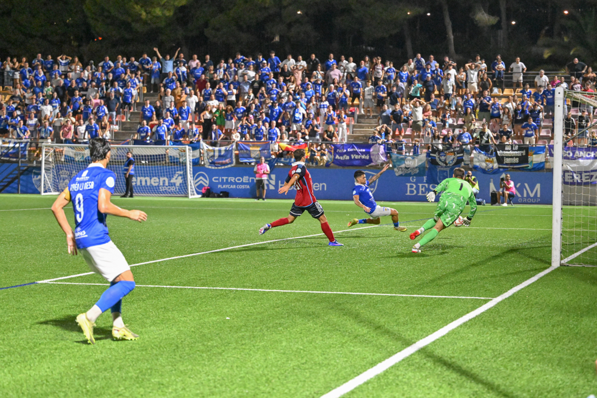

Un Xerez que fue de menos a más se deja dos puntos en Estepona
 Xerez CD
Xerez CDLos azulinos golpean dos veces en el larguero, con Moi y Josete como protagonistas, en un intenso 0-0 que dejó una sensación agridulce en el estreno liguero, aderezado por el emotivo saxofón de un canterano esteponense de padre jerezano
Hay empates que saben a poco y el que firmó el Xerez CD en su estreno liguero en el Muñoz Pérez es uno de ellos. Los azulinos golpearon hasta en dos ocasiones en el larguero y se marcharon de la Costa del Sol con la sensación de que el partido daba para más. Un 0-0 que reparte los puntos ante el Estepona, pero que deja en el ambiente esa pizca de amargura que solo produce la madera cuando se convierte en la última barrera antes del gol.
Antes de que rodara el balón, el Muñoz Pérez se vistió de emoción. Hugo Castro, jugador de la cantera del Estepona, se echó al hombro la responsabilidad de interpretar el himno local con un saxofón, en una estampa que puso el vello de punta a ambas aficiones. Pero la historia escondía un detalle precioso: el padre del canterano es de Jerez, y así lo confesaba el propio Castro minutos antes del pitido inicial, reconociendo que su padre tenía "hoy el corazón dividido" entre su tierra y los colores que defiende su hijo. Un pellizco de fútbol de raíces antes de noventa minutos de intensidad pura.
Un Xerez irreconocible en el arranque
Xavi Molist no movió el árbol de las quinielas y presentó el once esperado: Pantoja en portería; Guille Campos, Manu Galán, Moi y Chacartegui en la zaga; Raúl López, Isuskiza y Jaime López en el centro del campo; y Óscar Lorenzo, Rubén Mesa y Zequi Díaz en ataque. Cinco supervivientes del curso pasado y cinco caras nuevas para la presentación oficial.
Lo curioso llegó en el planteamiento. La pretemporada había dejado la imagen de un equipo identificado con la presión adelantada, con vocación de robar arriba y asfixiar la salida rival, pero el Xerez salió mucho más recogido de lo habitual, replegado en bloque medio y cediendo terreno a un Estepona que se encontró cómodo con el balón en los primeros minutos.
El partido, con una previa tensa por la polémica de las entradas y por los problemas de retransmisión —que dejaron a los aficionados sin poder seguir el choque hasta la reanudación—, arrancó con dos equipos de estilos opuestos. Rubén Mesa avisó desde la frontal (4') y un centro al segundo palo se le escapó por poco a Ballarín (7'). Jaime López, de lo más destacado en el verano azulino, pisó área sin fortuna en el remate (10'), preludio de la primera ocasión clara xerecista: un robo de Isuskiza que Óscar Lorenzo transformó en centro y que Rubén Mesa no logró empujar a la red (14').
El Estepona respondió con un testarazo de Ale Contreras que obligó a intervenir a Pantoja, y el saque de esquina posterior volvió a rozar la cruceta local. El balón parado, se intuía ya, iba a ser el gran arsenal de los de Manolo Sánchez durante toda la tarde.

Foto: PuroXerecismoUn pulso que no dio tregua
El choque no perdió ni un ápice de intensidad. Una galopada de Rubén Mesa acabó anulada por fuera de juego (21') mientras el Deportivo se soltaba poco a poco y ganaba metros. Moi tuvo que emplearse con dureza para frenar una internada, viendo la primera amarilla del partido (27'), y la falta posterior volvió a poner en aprietos a Pantoja. El susto mayor de la primera mitad llegó en el 34', con un cabezazo de Caro tras un pase de la muerte que hizo contener la respiración a toda la grada.
El Xerez, sin embargo, no se escondía del todo: un pase de Jaime López lo cruzó Óscar Lorenzo y el disparo se marchó lamiendo el poste (36'), y Guille Campos avisó también antes del intermedio (45').
La machada del larguero, por partida doble
Tras el paso por vestuarios, el guion apenas varió. Una falta de Raúl López casi le cuesta cara al Xerez, con un lanzamiento de Ballarín que se estrelló en la barrera (49'). Los dos banquillos se movieron casi al unísono: Manolo Sánchez buscó frescura en ataque, mientras Xavi Molist dio entrada a Julito y Zelu por Jaime López y Óscar Lorenzo.
Y fue entonces cuando el partido se transformó en un ida y vuelta de manual. En el 65', una gran acción individual de Zelu por banda terminó en un centro de Rubén Mesa que Zequi no alcanzó por centímetros. Dos minutos después, Julito mandó un balón al palo, aunque el linier ya había levantado el banderín.
Zelu, convertido en el especialista a balón parado tras su entrada, estuvo a punto de sorprender a Fran Martínez con un buen golpe franco (71'), y apenas tres minutos más tarde llegó el primer aviso de la madera: Moi conectó un trallazo que se estrelló en el travesaño tras otra falta botada por el propio Zelu, en la que parecía la ocasión más clara del partido.
Pero el Xerez todavía guardaba un último cartucho. Ya en el descuento, con el partido agonizando, Josete —que acababa de saltar al césped— repitió la maldición azulina y estrelló otro remate en el larguero, en la jugada que mejor resumió la tarde: un Xerez que empujó, que mereció más y que se topó con la madera como único freno.
Doble reclamación de penalti
El Estepona, por su parte, tampoco bajó los brazos y avisó con tres acciones de peligro en la recta final, además de reclamar un penalti en el área xerecista (83') que el colegiado no quiso ver. La réplica local no tardó en llegar: los azulinos pidieron los suyos por una caída de Julito dentro del área contraria (89'), sin que el árbitro murciano se atreviera a señalar nada en ninguno de los dos casos. Dos reclamaciones, una en cada portería, que resumen bien lo ajustado y disputado que fue el partido hasta el final. Apenas tres minutos de añadido bastaron para certificar un empate que sabe a poco para un Xerez que fue de menos a más y que se marcha de Estepona con la sensación de haber dejado dos puntos por el camino.
Ficha técnica
CD Estepona: Fran Martínez, Candelas, Heber Pena, Jule Jon, Ariel Herrero (Jorge Álvarez, 56'), Ale Contreras (Samu Expósito, 68'), Ballarín (Nacho Ramón, 56'), Sandji Baradij, Maxi B., Marín y Caro.
Xerez CD: Pantoja, Guille Campos, Manu Galán (Josete, 87'), Moi, Chacartegui, Raúl López, Isuskiza, Jaime López (Julito, 61'), Óscar Lorenzo (Zelu, 61'), Zequi Díaz (Jaime Fernández, 73') y Rubén Mesa (Fali, 73').
Árbitro: Víctor García Acosta (Comité murciano). Amonestó a Maxi, Ariel Herrero, Caro y Sandji, por parte local; y a Moi y Raúl López, por parte del Xerez.
Incidencias: Partido de la primera jornada de Liga del Grupo 4 de Segunda RFEF disputado en el Muñoz Pérez, con más de 200 aficionados xerecistas desplazados hasta la Costa del Sol. Antes del inicio, el joven Hugo Castro, canterano del Estepona e hijo de padre jerezano, interpretó el himno local con un saxofón en un emotivo gesto que precedió al partido.
← Volver a la portada